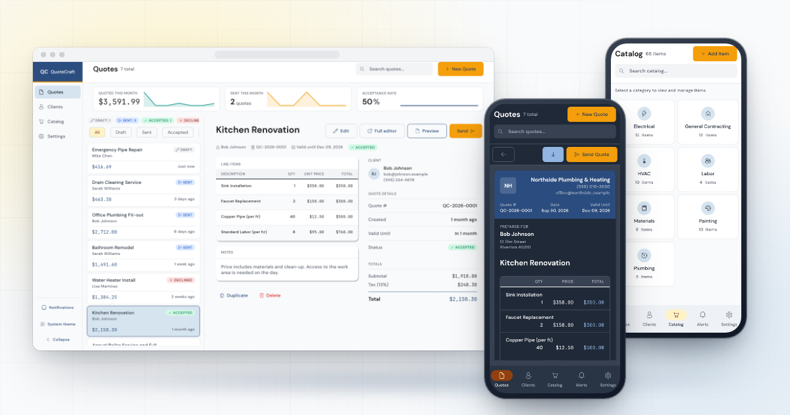
showcase-desk · showcaseThe Quotes page with Kitchen Renovation open in a desktop window, with the quote preview (Dark) and the catalog (Light) on phones, on warm paper.
1x · 2x
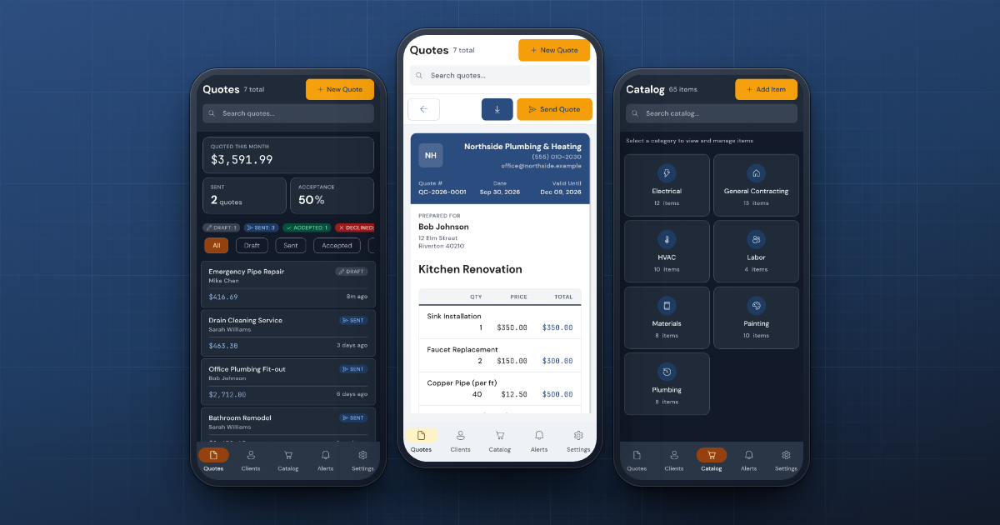
showcase-phones · showcaseThe quotes list (Dark), the quote preview with its slate band and amber Send Quote (Light, raised) and the catalog (Dark) on a blueprint ground.
1x · 2x
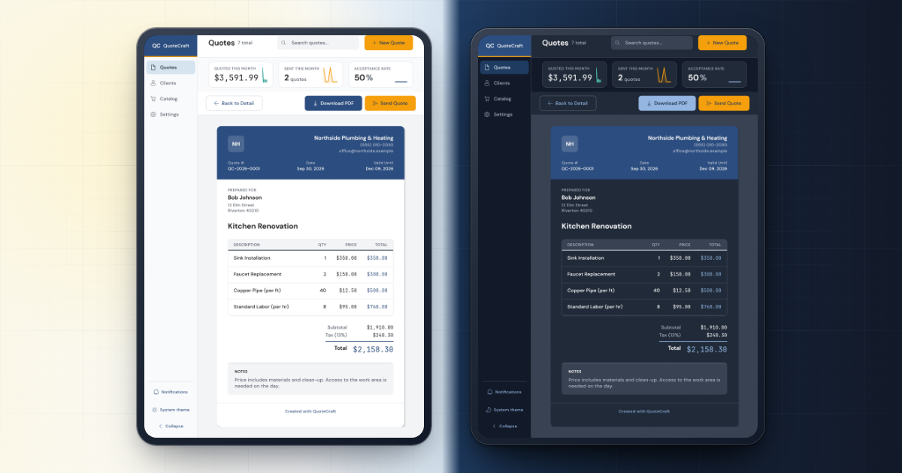
showcase-daynight · showcaseTwo tablets with Kitchen Renovation's preview in Light and in Dark, the ground turning from paper to night.
1x · 2x
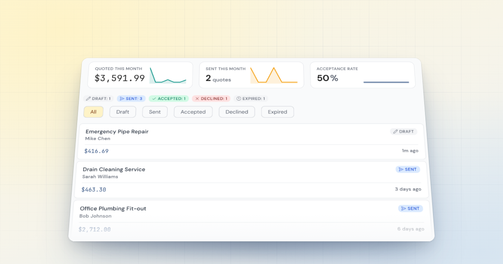
focus-quotes · focusedThe stat cards with their sparklines, the count for every status, the filter chips and the first quotes with their status pills, laid back on warm paper.
1x · 2x
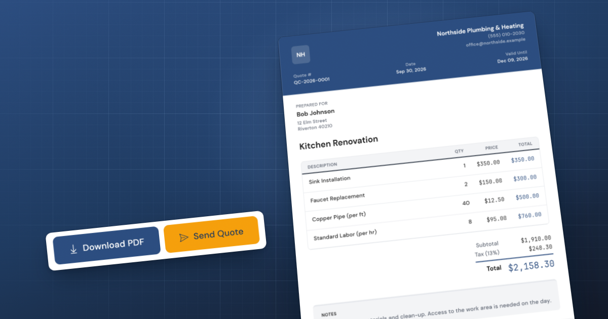
focus-preview · focusedThe on-screen preview of QC-2026-0001 with its slate band, line items and total, and the preview's Download PDF and amber Send Quote bar.
1x · 2x · hero
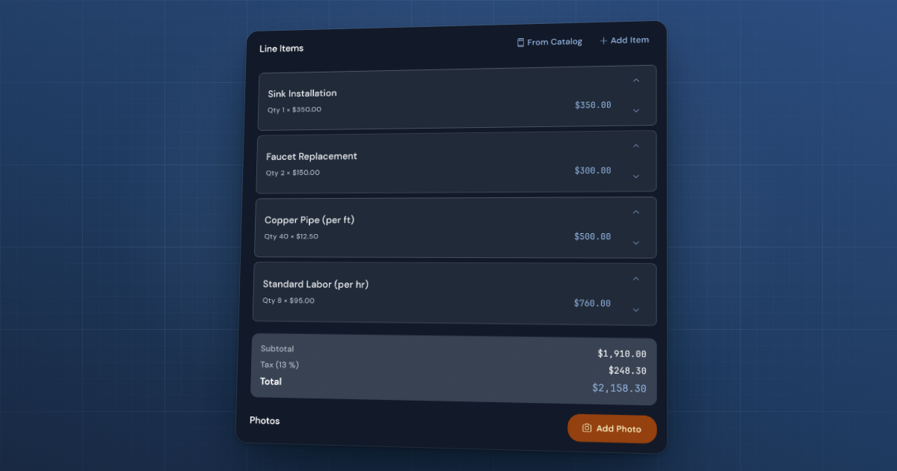
focus-editor · focusedThe editor in Dark: line items with From Catalog and Add Item, subtotal, tax and total, and Add Photo, as a night slab on blueprint.
1x · 2x
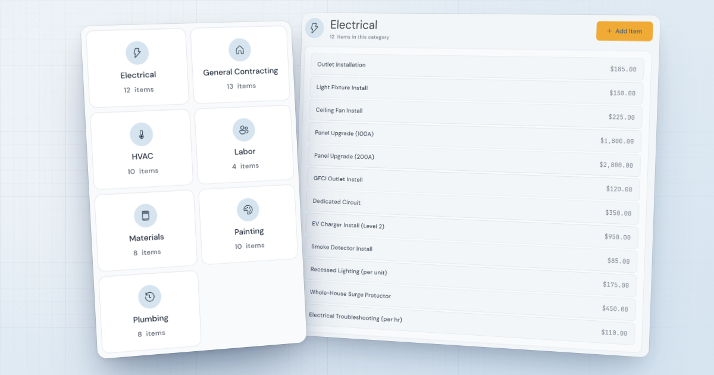
focus-catalog · focusedThe seven category tiles in front of Electrical's twelve priced items, on cool paper.
1x · 2x
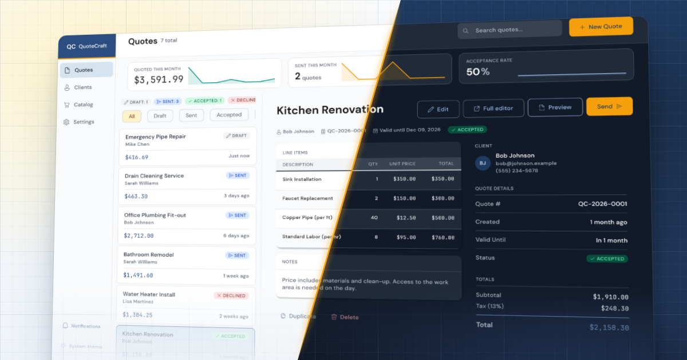
stylized-split · stylizedOne Quotes page in Light and Dark on a turned plane, cut by a single diagonal in the app's amber rule.
1x · 2x · hero
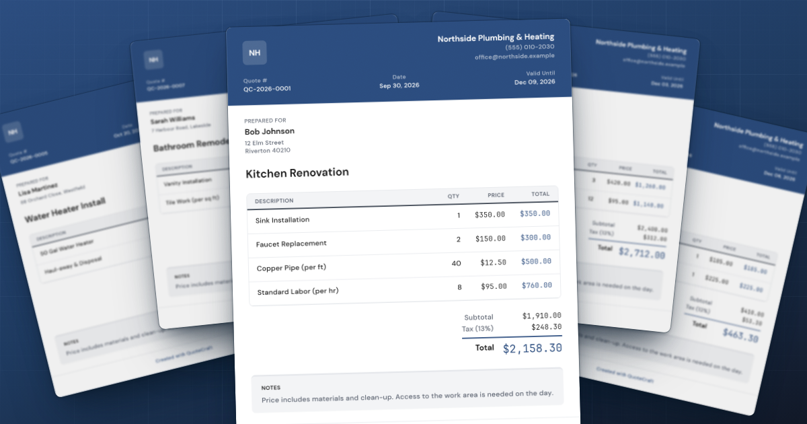
stylized-sheets · stylizedFive of the seeded quotes as the app previews them, dealt across a blueprint table, Kitchen Renovation on top.
1x · 2x
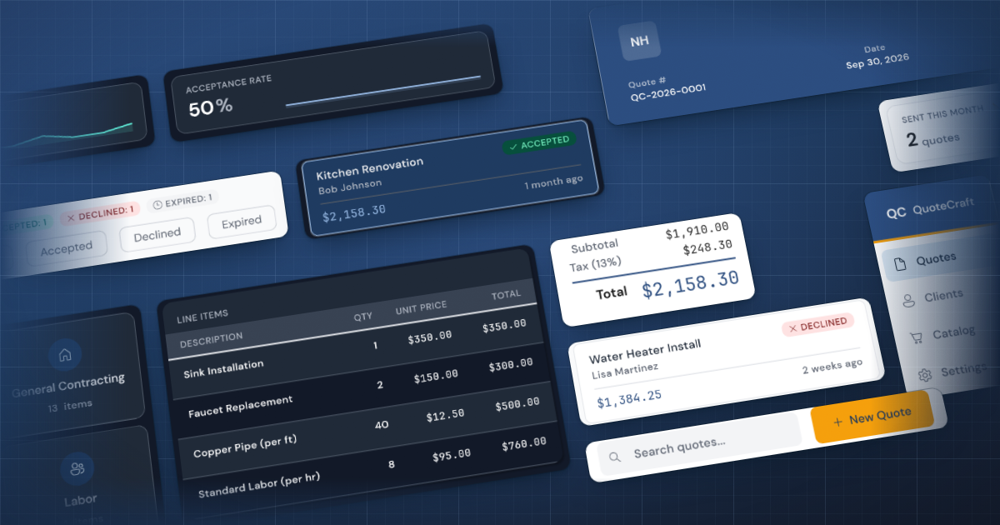
stylized-mosaic · stylizedA tilted wall of whole elements, Light and Dark alternating: stat cards, status chips, quote cards, line items, totals, catalog tiles and New Quote.
1x · 2x
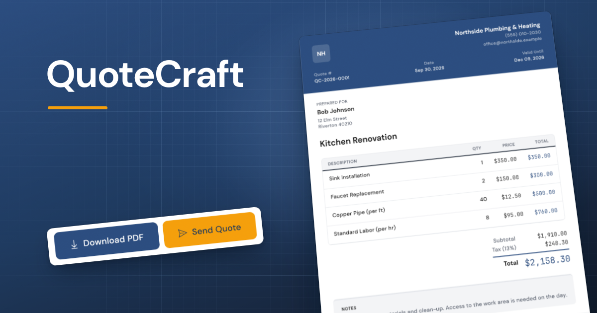
focus-preview-titled · titledThe quote preview banner with the QuoteCraft name in DM Sans Bold over an amber rule (optional).
1x · 2x